← Back to the workshop home ← Volver a la portada del taller
The complete theory behind the hands-on lab — every concept illustrated, no prior GIS or remote-sensing experience assumed.
Toda la teoría detrás del laboratorio práctico — cada concepto ilustrado, sin asumir experiencia previa en SIG ni percepción remota.
Everything in this workshop runs on WebAssembly (Pyodide): a full scientific Python — NumPy, SciPy, scikit-learn, rasterio, matplotlib — compiled to run inside the browser's sandbox. Your data never leaves your machine, there is no server to pay for or trust, and closing the tab removes everything.
Todo en este taller corre sobre WebAssembly (Pyodide): un Python científico completo — NumPy, SciPy, scikit-learn, rasterio, matplotlib — compilado para ejecutarse dentro del sandbox del navegador. Tus datos nunca salen de tu máquina, no hay servidor que pagar ni en quien confiar, y al cerrar la pestaña todo desaparece.
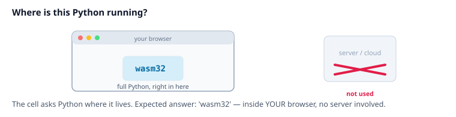
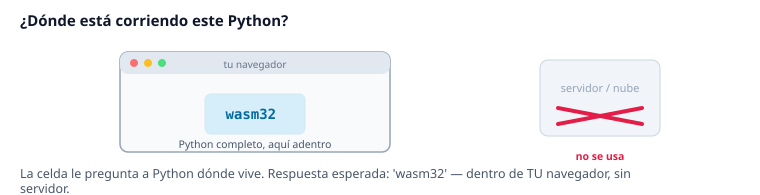
Modern satellite archives live in the cloud as Cloud-Optimized GeoTIFFs (COG) indexed by STAC catalogs — a standard JSON language for asking "which scenes cover my area in March?". Three open catalogs power the crop pipeline: NASA Earthdata (HLS: Landsat and Sentinel-2 harmonized into one 30 m record), Microsoft Planetary Computer (Sentinel-1 radar, terrain-corrected), and Earth Search/AWS (Sentinel-2, the browser-friendly source this workshop's data route uses). The trick that makes them practical: COGs support range reads, so you download only the bytes covering your study area — never whole scenes.
Los archivos satelitales modernos viven en la nube como GeoTIFFs optimizados para nube (COG) indexados por catálogos STAC — un lenguaje JSON estándar para preguntar "¿qué escenas cubren mi zona en marzo?". Tres catálogos abiertos alimentan el pipeline de cultivos: NASA Earthdata (HLS: Landsat y Sentinel-2 armonizados en un registro único de 30 m), Microsoft Planetary Computer (radar Sentinel-1 corregido por terreno) y Earth Search/AWS (Sentinel-2, la fuente apta para navegador que usa la ruta de datos de este taller). El truco que los vuelve prácticos: los COG soportan lecturas por rango, así que solo descargas los bytes que cubren tu zona de estudio — nunca escenas completas.
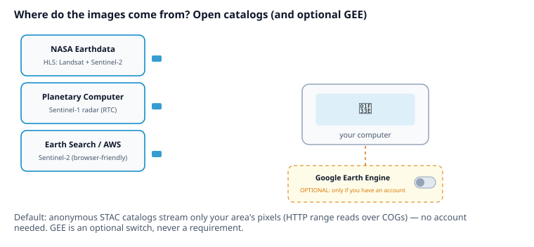
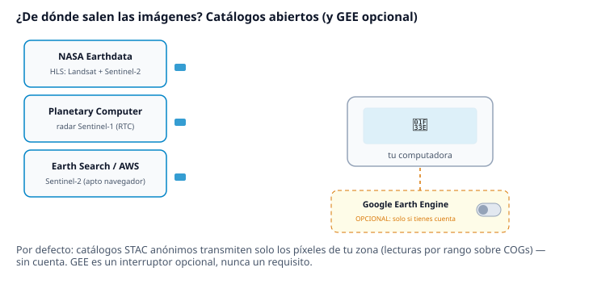
download_backend: "gee") and download
only the results. But the default needs no account at all: GEE is a convenience switch,
never a requirement.download_backend: "gee") y
descargar solo los resultados. Pero el modo por defecto no necesita ninguna cuenta:
GEE es un interruptor de conveniencia, nunca un requisito.A single satellite pass is a lottery: clouds, haze, shadows. Instead of picking "the least bad scene", we combine every scene of the month with the geometric median — a robust multi-dimensional median that treats each pixel's 13 bands as one vector and finds the most central spectral signature of the month. Clouds are outliers, so they get voted out; and because all bands are reduced together, band ratios like NDVI stay physically consistent (a plain per-band median would mix April's water content with July's chlorophyll).
Una sola pasada del satélite es una lotería: nubes, bruma, sombras. En vez de elegir "la escena menos mala", combinamos todas las escenas del mes con la mediana geométrica — una mediana multidimensional robusta que trata las 13 bandas de cada píxel como un solo vector y encuentra la firma espectral más central del mes. Las nubes son atípicos, así que quedan fuera por mayoría; y como todas las bandas se reducen juntas, los cocientes como el NDVI se mantienen físicamente consistentes (una mediana banda por banda mezclaría la humedad de abril con la clorofila de julio).
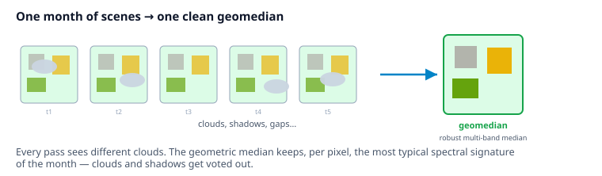
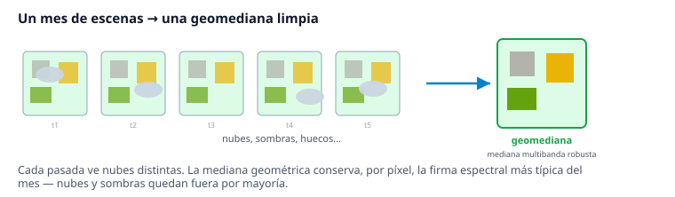
Sensors see far beyond the visible: near-infrared (NIR) and short-wave infrared (SWIR) are where vegetation, water and soil differ most. From 6 spectral bands we derive 7 classic indices — NDVI (vigor), EVI, GCVI (chlorophyll), MSAVI2, LSWI (water), NDSVI and NDTI (residue/tillage) — giving 13 layers per pixel that summarize the field's condition.
Los sensores ven mucho más allá de lo visible: el infrarrojo cercano (NIR) y el de onda corta (SWIR) son donde más difieren vegetación, agua y suelo. De 6 bandas espectrales derivamos 7 índices clásicos — NDVI (vigor), EVI, GCVI (clorofila), MSAVI2, LSWI (agua), NDSVI y NDTI (residuos/labranza) — dando 13 capas por píxel que resumen la condición del campo.
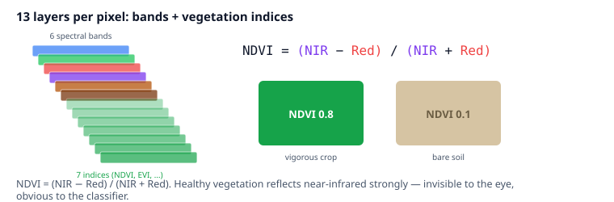
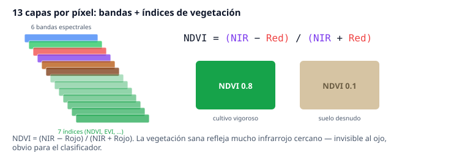
Classifying pixel by pixel produces salt-and-pepper maps and ignores that agriculture happens in fields. The Shepherd algorithm (2019) first clusters pixels by spectral similarity (k-means), finds connected clumps, then iteratively merges the small ones into their most similar neighbour — leaving homogeneous segments that follow real parcel boundaries. This workshop uses shepherd-wasm, a pure NumPy/SciPy port that runs in the browser and is bit-exact against the reference implementation.
Clasificar píxel por píxel produce mapas "sal y pimienta" e ignora que la agricultura ocurre en parcelas. El algoritmo Shepherd (2019) primero agrupa píxeles por similitud espectral (k-means), encuentra grumos conexos y luego fusiona iterativamente los pequeños con su vecino más parecido — dejando segmentos homogéneos que siguen los límites reales de las parcelas. Este taller usa shepherd-wasm, un port puro NumPy/SciPy que corre en el navegador y es bit-exacto contra la implementación de referencia.
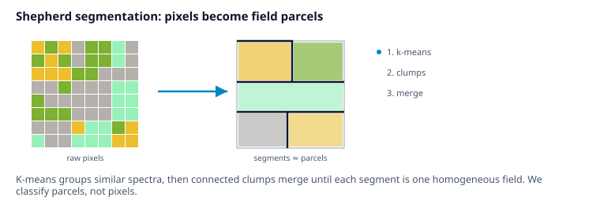
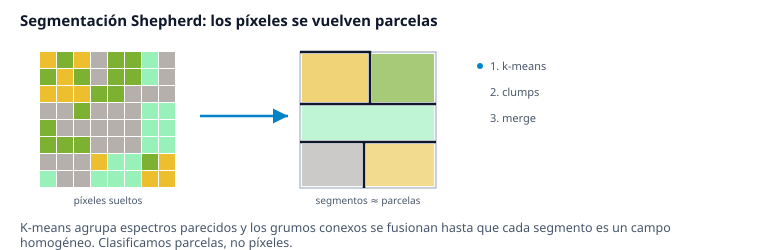
For each segment we compute summary statistics (mean, standard deviation, min, max…) of every band — zonal statistics. The image becomes a table: one row per parcel, one column per statistic. In production, with 8 months of optical and radar mosaics, that's 800+ columns describing each parcel's phenological history — how it greened up, peaked and dried through the season. That temporal fingerprint is what tells wheat apart from corn.
Para cada segmento calculamos estadísticas de resumen (media, desviación estándar, mín, máx…) de cada banda — estadísticas zonales. La imagen se vuelve una tabla: una fila por parcela, una columna por estadística. En producción, con 8 meses de mosaicos ópticos y de radar, son más de 800 columnas que describen la historia fenológica de cada parcela — cómo verdeció, llegó a su pico y se secó a lo largo del ciclo. Esa huella temporal es lo que distingue al trigo del maíz.
Ground truth comes as GPS points: someone stood in a field and wrote down "wheat". Points are joined to the segments they fall in, and a purity filter keeps only segments where all points agree on one class — mixed segments would teach the model contradictions. You don't need to draw field boundaries: you mark where you know the crop, and the segmentation does the spatial expansion for you.
La verdad de campo llega como puntos GPS: alguien se paró en una parcela y anotó "trigo". Los puntos se cruzan con los segmentos donde caen, y un filtro de pureza conserva solo los segmentos donde todos los puntos coinciden en una clase — los segmentos mixtos enseñarían contradicciones al modelo. No necesitas dibujar los límites de las parcelas: marcas dónde conoces el cultivo y la segmentación hace la expansión espacial por ti.
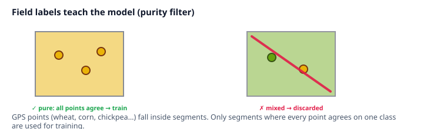
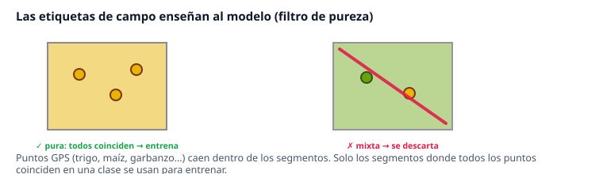
With a feature table and labels, this is classic supervised learning. The workshop trains a Random Forest — hundreds of decision trees voting — in seconds inside your browser. The production pipeline goes further with TPOT, an AutoML system that breeds and evaluates whole scikit-learn pipelines to find the best one for your data. Accuracy is always reported on parcels the model never saw.
Con la tabla de variables y las etiquetas, esto es aprendizaje supervisado clásico. El taller entrena un Random Forest — cientos de árboles de decisión votando — en segundos dentro de tu navegador. El pipeline de producción va más lejos con TPOT, un sistema AutoML que cruza y evalúa pipelines completos de scikit-learn hasta encontrar el mejor para tus datos. La exactitud siempre se reporta sobre parcelas que el modelo nunca vio.
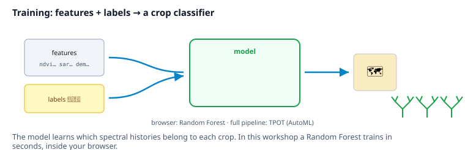
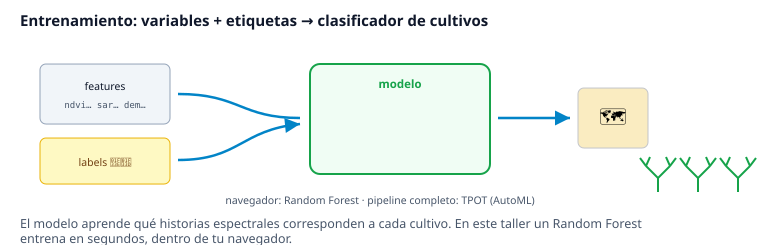
The trained model classifies every parcel — labeled or not — and the prediction is painted back onto the segmentation. The result is a decision-ready product: a vector map (GeoPackage in production) you can open in QGIS, aggregate into statistics, or compare across years.
El modelo entrenado clasifica todas las parcelas — etiquetadas o no — y la predicción se pinta de vuelta sobre la segmentación. El resultado es un producto listo para decisiones: un mapa vectorial (GeoPackage en producción) que puedes abrir en QGIS, agregar en estadísticas o comparar entre años.
Everything you practiced scales up in
geocrop_analysis_mx: live
download from the open catalogs (months of imagery, Sentinel-1 radar included), monthly
geomedians with progress reporting, the same Shepherd segmentation, full zonal
statistics, AutoML training and a GeoPackage crop map — plus your own rasters (DEM,
climate, land use) as extra features, and the optional GEE backend. Plain
pip install on Windows, Linux or macOS; no conda, no compilers, no
mandatory accounts.
Todo lo que practicaste escala en
geocrop_analysis_mx:
descarga en vivo desde los catálogos abiertos (meses de imágenes, radar Sentinel-1
incluido), geomedianas mensuales con reporte de progreso, la misma segmentación
Shepherd, estadísticas zonales completas, entrenamiento AutoML y un mapa de cultivos en
GeoPackage — más tus propios rasters (MDE, clima, uso de suelo) como variables extra, y
el backend GEE opcional. Un simple pip install en Windows, Linux o macOS;
sin conda, sin compiladores, sin cuentas obligatorias.
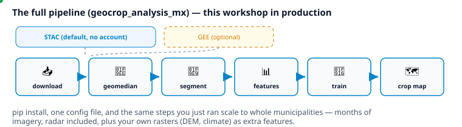
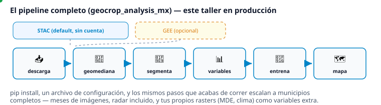
→ Ready? Launch the hands-on lab → ¿Listo? Abre el laboratorio práctico